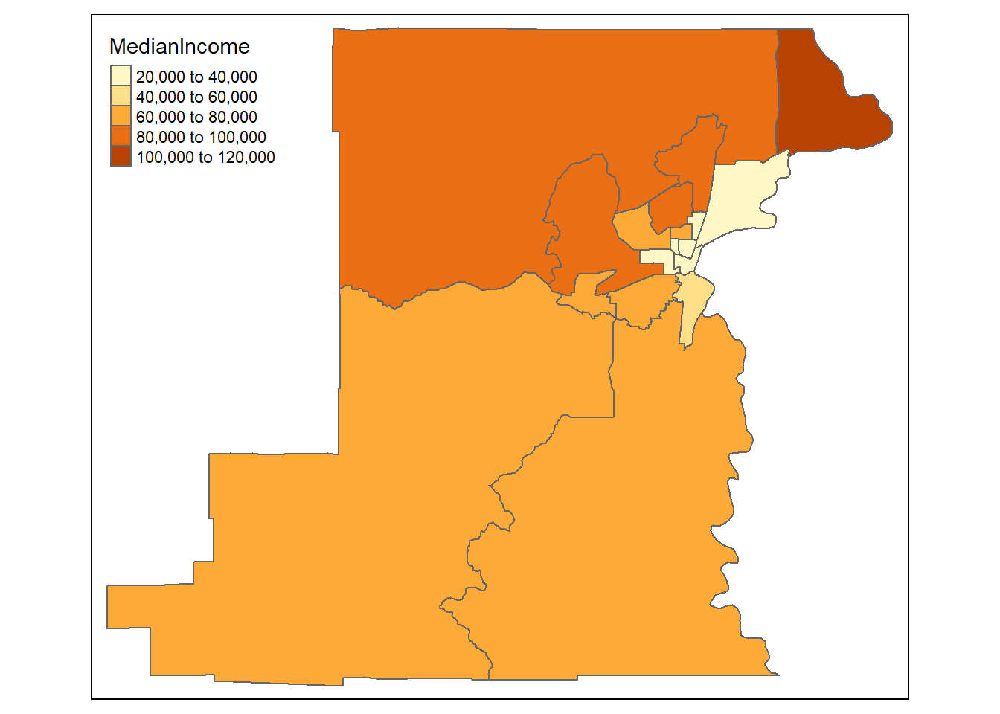
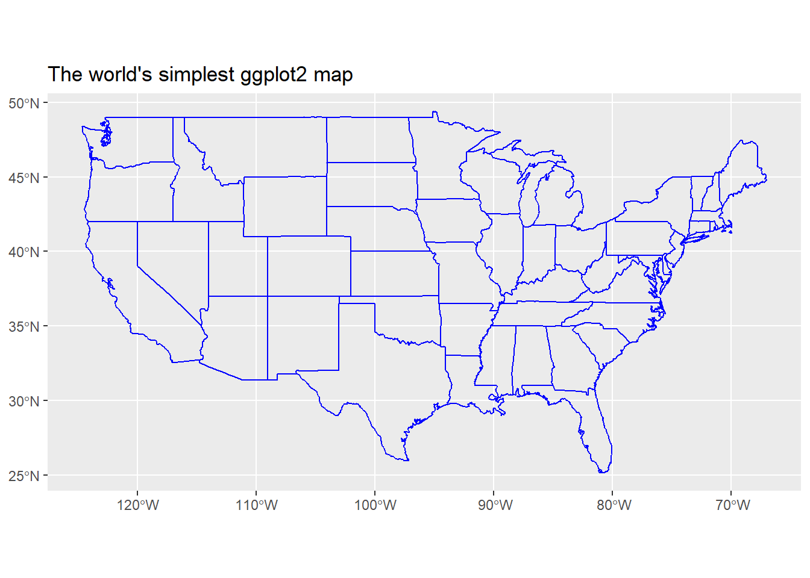

Chapter 7 Visualizing Spatial Data
7.1 Lesson Goals
- Explore several mapping libraries in R
- Construct a couple example visualizations with spatial data in R
R is fantastic for making publication quality static maps, and for generating repetitive graphics through scripts; we’ve already seen how to make simple maps using base plotting,ggplot, and tmap. There are also a number of packages in R that link R code to plotting libraries developed in Javascript (or other languages) for interactive plotting and web integration.
It can be hard to decide which mapping packages to learn and use - some nice advice from Martin Tennekes who created tmap:
- If you know some ggplot, don’t care about interactive maps, and don’t want to spend a lot of time learning new packages, use ggplot
- If you want interactive maps as flexible as possible, use leaflet
- If you want to simply explore spatial objects ineractively as easily as possible, use mapview
- Otherwise, use tmap!
7.2 tmap
Load tidycensus - you’ll need to set your Census API key. A key can be obtained from here.
library(sf,quietly = T)
library(tidycensus)
# census_api_key("YOUR API KEY GOES HERE")Here we’ll start with a simple choropleth map of median household income in Benton county in Oregon.
library(tidycensus)
library(tmap)
options(tigris_use_cache = FALSE)
benton_tracts <- get_acs(state = 'OR', county = 'Benton', geography = "tract",
variables = "B19013_001", geometry = TRUE)
# Rename a column
benton_tracts <- benton_tracts %>%
dplyr::rename(MedianIncome=estimate)
tm_shape(benton_tracts) + tm_polygons(col="MedianIncome")
That’s a pretty basic map - we can adjust a number of settings: - breaks: we can set different breaks for our map - n: we can control the number of bins - palette: we can change the color palette
These are just a few - let’s play with those to start.
breaks = c(0, 40, 80, 120, 140) * 1000
t1 <- tm_shape(benton_tracts) + tm_polygons(col="MedianIncome", breaks=breaks)
t2 <- tm_shape(benton_tracts) + tm_polygons(col = "MedianIncome", n = 10)
t3 <- tm_shape(benton_tracts) + tm_polygons(col = "MedianIncome", palette = "BuGn")
tmap_arrange(t1, t2, t3, nrow = 1)tmap also has view mode which can be handy
tmap_mode("view")
tm_shape(benton_tracts) + tm_polygons(col="MedianIncome")We can make multi-layered maps (shout out to Amalia Handler who used this in tmap demo for our lab group)
# Load data
data(World, metro, rivers, land)
# Set to static mode
tmap_mode("plot")
# Make map that is multilayered
tm_shape(land) +
tm_raster("elevation", palette = terrain.colors(10)) +
tm_shape(World) +
tm_borders("white", lwd = .5) +
tm_text("iso_a3", size = "AREA") +
tm_shape(metro) +
tm_symbols(col = "red", size = "pop2020", scale = .5) +
tm_legend(show = FALSE)We can make faceted maps with tmap
# Set mode to interactive
tmap_mode("view")
# Plot it out
tm_shape(World) +
tm_polygons(c("pop_est", "HPI","life_exp","well_being")) +
tm_facets(sync = TRUE, ncol = 2)We can again plot our elevation and Crater Lake boundary data in tmap as we did in the Raster Section:
library(Rspatialworkshop)
library(terra)
data(CraterLake)
raster_filepath <- system.file("extdata", "elevation.tif", package = "Rspatialworkshop")
elevation <- rast(raster_filepath)
elevation <- terra::mask(elevation, vect(CraterLake))
elevation <- project(elevation, '+proj=utm +zone=10 +ellps=GRS80 +units=m +no_defs')
CraterLake <- st_transform(CraterLake, '+proj=utm +zone=10 +ellps=GRS80 +units=m +no_defs')
map_crlk <- tm_shape(CraterLake) + tm_polygons(lwd = 2)
map_crlkel = map_crlk +
tm_shape(elevation) + tm_raster(alpha = 0.7,palette = terrain.colors(12)) + tm_layout(legend.position = c("left","bottom"),
legend.width = 1)
map_crlkel7.2.1 Exercise
Look at some of the links in the tmap GitHub repository and specifically tmap: get started! and see what modifications to plotting elevation and the Crater Lake park boundary you can come up with
7.2.2 Solution
Just an example incorporating a number of settings available in tmap to produce cartographic output
tm_shape(elevation) +
tm_raster(title = "Elevation",
style = "cont",
palette = "-Spectral") +
tm_shape(CraterLake) +
tm_borders(col = "black",
lwd = 1)+
tm_scale_bar(breaks = c(0, 10, 20),
text.size = .5,
position = c("left", "bottom")) +
tm_grid(n.x = 4, n.y = 3) +
tm_compass(position = c("right", "top"),
type = "arrow",
size = 1.5)7.3 leaflet
Leaflet is an extremely popular open-source javascript library for interactive web mapping, and the leaflet R package allows R users to create Leaflet maps from R. Leaflet can plot sf or sp objects, or x / y coordinates, and can plot points, lines or polygons. There are a number of base layers you can choose from. It’s worth spending some time exploring the excellent Leaflet for R site.
Here we make the simplest of leaflet maps:
library(leaflet)
m <- leaflet() %>%
addTiles() %>% # Add default OpenStreetMap map tiles
addMarkers(lng=-123.26720, lat=44.5810, popup="Here's my house")
m # Print the map7.4 mapview
Mapview is a package designed for quick and easy interactive visualizations of spatial data - it makes use of leaflet but simplifies mapping functions compared to the leaflet package.
It’s easy to layer features with mapview - you can supply a list of objects to mapview or use + syntax as with ggplot.
Here we plot gages within Benton County:
library(Rspatialworkshop)
library(mapview)
library(readr)
library(sf)
library(tigris)
counties <- counties("Oregon", cb = TRUE)
benton <- counties[counties$NAME=='Benton',]
fpath <- system.file("extdata", "Gages_flowdata.csv", package="Rspatialworkshop")
gages <- read_csv(fpath,show_col_types = FALSE)
gages_sf <- gages %>%
st_as_sf(coords = c("LON_SITE", "LAT_SITE"), crs = 4269, remove = FALSE)
st_crs(gages_sf)==st_crs(benton)
# remember spatial indexing?
gages_benton <- gages_sf[benton,]
mapview(gages_benton) + benton7.4.1 Exercise
Glance through the mapview basics and adjust legend and attributes. Take a look at mapview advanced controls as well and try plotting stations and the county polygon together, this time modifying features such as thicker black outline and transparent fill for the county outline and colorizing gages by their average flow (‘AVE’).
7.4.2 Solution
mapview(gages_benton,zcol='AVE') + mapview(benton, alpha.regions=.07, color='black', lwd=2)7.5 Adding Web Map services in mapview
We’ll visualize data with mapview and load web map layers alongside using mapview and underlying leaflet functionality.
First we load load an excel file containing coordinate information in a known projection and promote to an sf spatial data frame.
library(Rspatialworkshop)
library(sf)
library(dplyr)
library(readxl)
library(mapview)
fpath <- system.file("extdata", "Station_Locations.xlsx", package="Rspatialworkshop")
stations <- read_xlsx(fpath)
glimpse(stations)## Rows: 31
## Columns: 3
## $ Station <chr> "1", "2", "3", "4", "5", "6", "7", "8", "9", "10", "11", "12",~
## $ x <dbl> -2140749, -2140111, -2124688, -2125545, -1664112, 1606578, -17~
## $ y <dbl> 2502887, 2469697, 2533842, 2556987, 2770644, 2698398, 2664873,~summary(stations$x)## Min. 1st Qu. Median Mean 3rd Qu. Max. NA's
## -2259078 -2124688 -1561956 -1630593 -1454137 1606578 2# common clean up steps for spatial data - we can't use data missing coordinates so drop those records
stations <- stations[complete.cases(stations),]
# often spatial data in projected coordinates will have missing negative values for x values - common thing to fix:
stations$x[stations$x > 0] <- 0 - stations$x[stations$x > 0]
stations <- stations %>%
st_as_sf(coords = c("x", "y"), remove = FALSE)
# in this case we know the particular Albers projection and have the information as a proj string
st_crs(stations) <- "+proj=aea +lat_1=29.5 +lat_2=45.5 +lat_0=23 +lon_0=-96 +x_0=0 +y_0=0 +ellps=GRS80 +datum=NAD83 +units=m +no_defs" Basic interactive map of our spatial stations with mapview:
mapview(stations)We know of web mapping services for the National Hydrography dataset - these are stream site locations so imagine we want to visualize how closely these sites match a known rivers and stream network:
library(leaflet)
# create a mapview object with our stations:
m <- mapview(stations, legend=FALSE)
# we configure the map attribute of our mapview object - try:
# 'attributes(m)
# to see those attributes
# The map attribute for mapview accepts leaflet methods - in this case we use addWMSTiles to add web map service tiles to the map
m@map <- m@map %>% addWMSTiles(group = 'NHDPlus',
"https://watersgeo.epa.gov/arcgis/services/NHDPlus_NP21/NHDSnapshot_NP21/MapServer/WmsServer?",
layers = 4,
options = WMSTileOptions(format = "image/png", transparent = TRUE),
attribution = "") %>% addWMSTiles(group = 'NHDPlusHR',
"https://hydro.nationalmap.gov/arcgis/services/NHDPlus_HR/MapServer/WMSServer?",
layers = 9,
options = WMSTileOptions(format = "image/png", transparent = TRUE),
attribution = "") %>% mapview:::mapViewLayersControl(names = c("NHDPlus","NHDPlusHR"))
m7.6 ggplot2
We’ve used this in simple examples throughout the workshop using geom_sf with ggplot2. If time we can try to make a polished map using ggplot using this post as a guide.
7.6.1 Exercise
Using the example in post above, get counties for your state using maps package as shown in example - igonore the extra packages and some of the bells and whistles in the blog post, just try using a few of their ideas and adding a few of the ggplot parameters to make an interesting map with counties. Feel free to try adding some cities too if you want.
7.6.2 Solution
One idea
library(tmap)
library(tmaptools)
library(maps)
library(ggplot2)
counties <- st_as_sf(map("county", plot = FALSE, fill = TRUE))
counties <- subset(counties, grepl("oregon", counties$ID))
counties$area <- as.numeric(st_area(counties))
ggplot() +
geom_sf(data = counties, fill = NA, color = gray(.5)) +
coord_sf(xlim = c(-125, -115), ylim = c(41, 47), expand = FALSE)
library(ggspatial)
ggplot() +
geom_sf(data = counties, aes(fill = area)) +
scale_fill_viridis_c(trans = "sqrt", alpha = .4) +
coord_sf(xlim = c(-125, -115), ylim = c(41, 47), expand = FALSE) +
theme(panel.grid.major = element_line(color = gray(0.5), linetype = "dashed",
size = 0.5), panel.background = element_rect(fill = "aliceblue")) +
annotation_scale(location = "bl", width_hint = 0.4) +
annotation_north_arrow(location = "tr", which_north = "true",
style = north_arrow_fancy_orienteering)